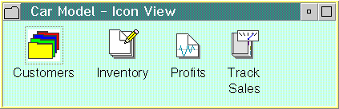

A container object holds other objects. Its primary purpose is to provide a way for the user to group related objects for easy access and retrieval. To illustrate its importance, consider the example of the design of a software model of a car dealership. A salesperson needs a car object to represent each car model on his lot. He also needs a customer object to represent each customer who purchases a car. He needs a worksheet object to track sales, profits, inventory, customers, and so on. Finally, he needs a container objects to group these objects. The following figure shows a container holding several related objects: